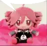
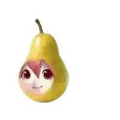
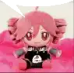
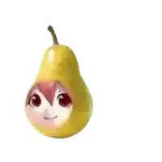

My interests #2

I love listening to Hatsune Miku and Kasane Teto!
Infact, I have some or their merch in my house as a collection
Let me know if you listen to vocaloid too
 
I love listening to Hatsune Miku and Kasane Teto!
Infact, I have some or their merch in my house as a collection
Let me know if you listen to vocaloid too
 